このブログのように、自分のドメインを取得して、
HTMLで作られた静的ウェブサイトを１円で公開する方法をここに記しておきます。
なぜ１円？となりますよね。
無料ではないんですよ。
自分はこれ闇深い理由があると断言します。
自分は一回引っかかってしまい、無駄な機能にお金を払わされてしまいました(ﾕﾙｾﾅｲ‼)
少しでも間違うと、お金を取られてしまいますので要注意！
1.ドメインを取得する
まず、お名前ドットコムでドメインを取得します。
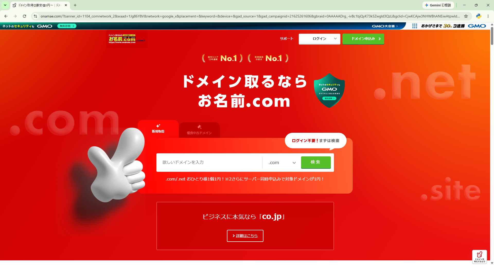
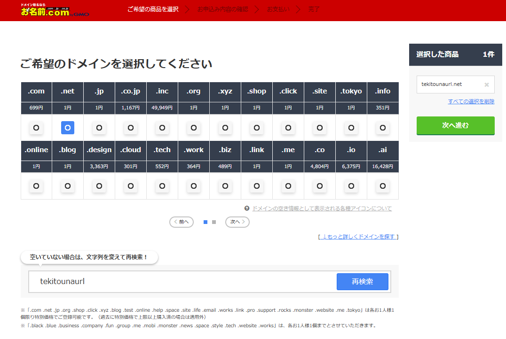
1円のドメインを選択したら、申込内容確認画面まで進めてください。
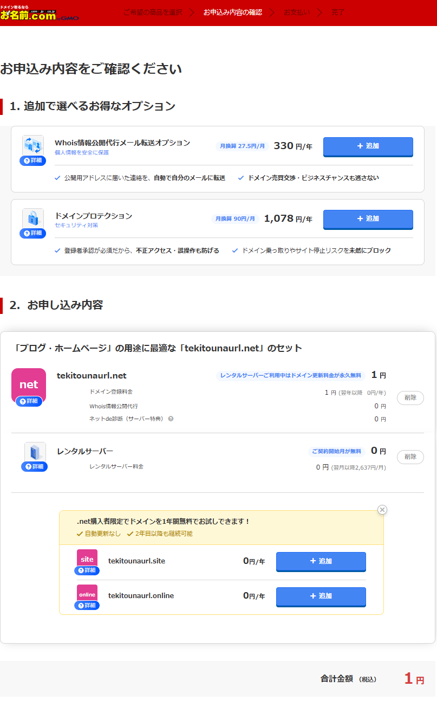
最初のトラップはここ！
この画面、よく見ていただくと、合計金額１円と書かれていますが、
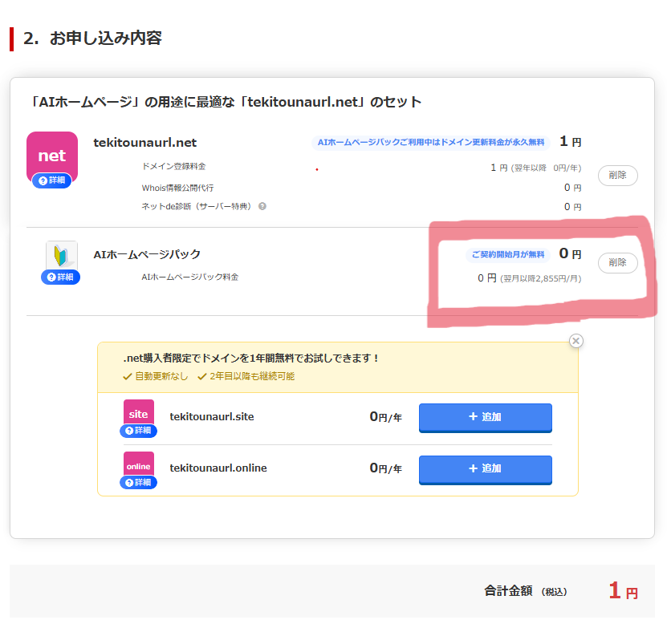
ドメイン以外にデフォルトでなぞのサービスが入っています。
AIホームページパック？0円と書いてありますが、
よく見ると翌月以降2,855円
ダークパターンすぎるあまりに姑息すぎる手口
実はお名前ドットコムはこのようなずる賢いやり口で知られており、
数年前、XがTwitterだったころ、ある方が是正しようと呼びかけを行ったことがあり、バズったことがありました。
消費者庁に報告したようですが、いまだ改善されている様子はありません...(ｱﾘｴﾅｲ)
知らない間にこのようなサービスに契約させるため、1円にしてクレカの登録をさせているとしか思えませんね！
ここできちんといらないサービスを削除しておいてください。
この手口を乗り越えたら、一旦ドメインの取得まで完了してください。
1.GithubPagesに登録する
GithubPagesという、マイクロソフト運営のサービスにアカウントを作ります。
アカウントを作成したら、サイドメニューから、All repositoriesに移ります。
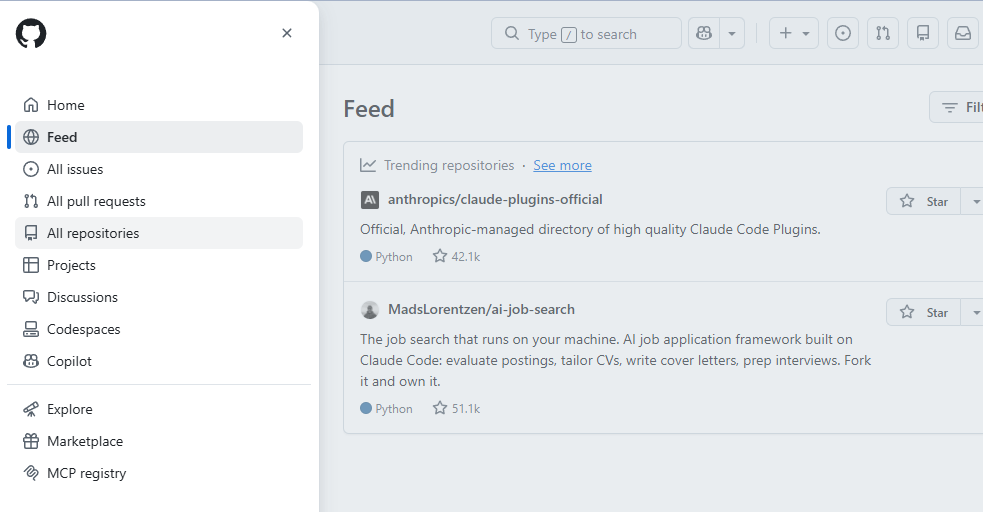
次に、New repositoryをクリック
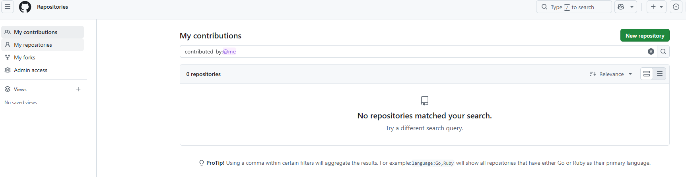
Repository nameにサービスのなどを名前を付けておきます。
今回はblogにしておきます。
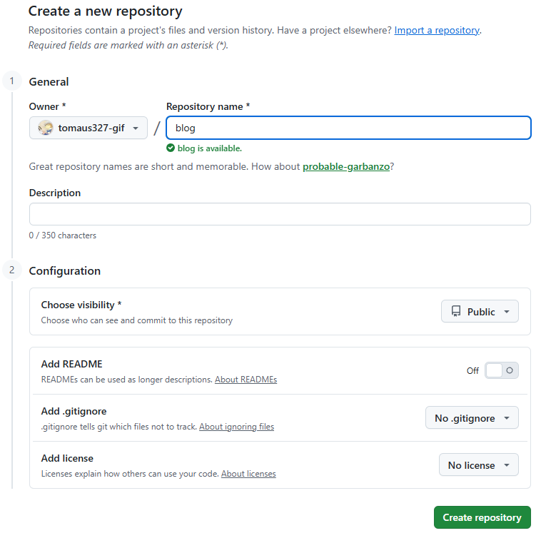
Create repositoryをクリック
サイドメニューからAll repositories→My repositoriesに移ります。
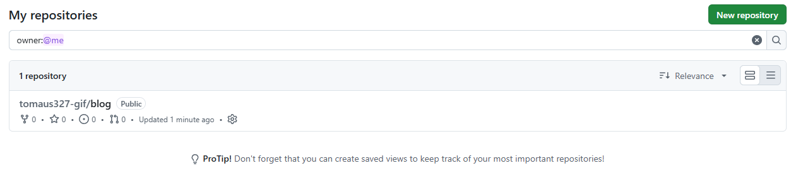
作成されていることが確認できますね。
サイドメニューからAll repositories→My repositories→作成したレポジトリをクリック
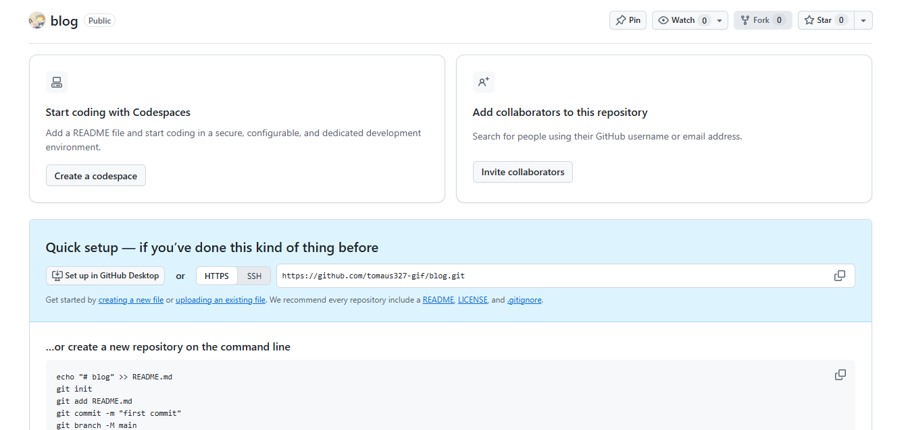
最初開くと、この画面がでるのですが、本来この画面でファイルを追加できるはずなんです。
ですがそのような機能がないページが表示されていて、
AIに聞いても、解決方法がわかってないっぽいので、
自分なりの解決方法で突破します。
一度、Create a codespaceをクリックし、もとの画面に戻ります。
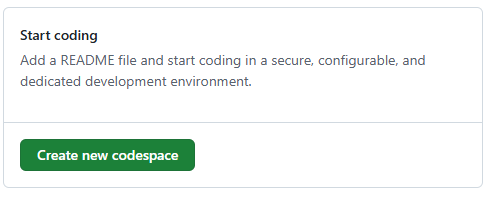
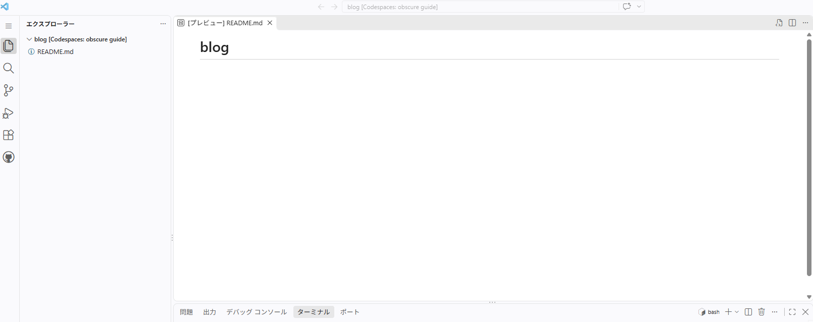
↑ここまで来たら、戻る
するとこの画面が表示されます。
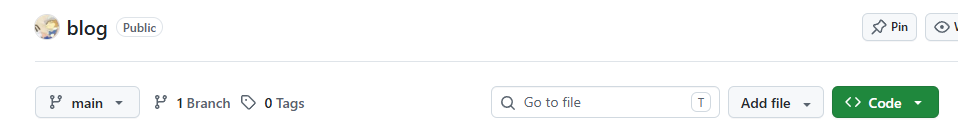
Add File→Create new fileをクリック
こちらでindex.htmlを作成し、HTML文を書いておきます。
Commit Changesをクリック
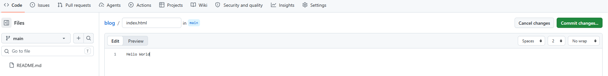
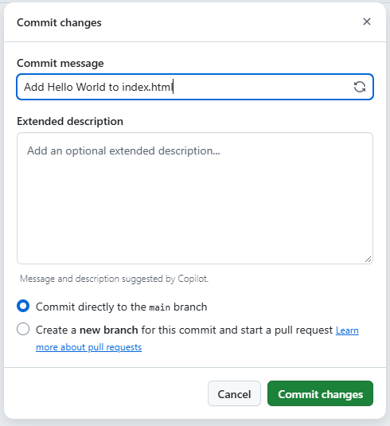
My repositories→作成したレポジトリをクリック→上のメニューのSettingをクリック
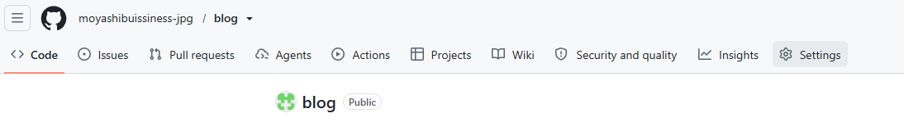
横のPagesをクリック
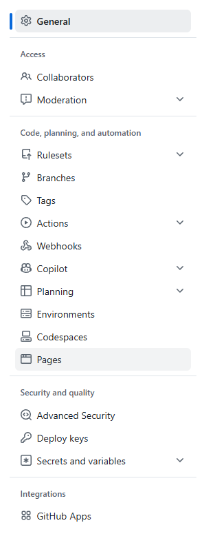
BrachをMainにしてクリック
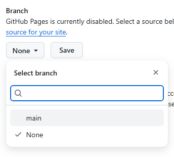
するとPagesの一番上に、このような部分が出てくると思うので、Visit siteをクリック(反映に時間かかるかも)
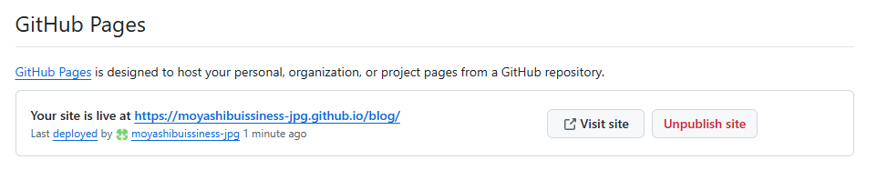
すると先ほどのindex.htmlが表示されます。
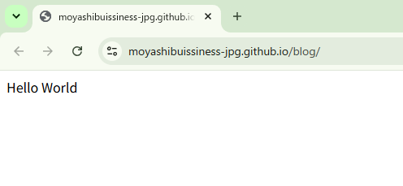
お名前ドットコムのDNSレコード設定
お名前ドットコムのサイドメニューから、ネームサーバー/DNS→ドメインDNS設定に移る
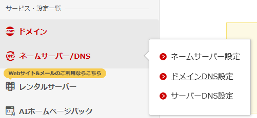
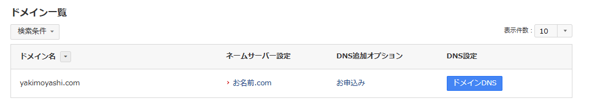
ドメインDNSボタンをクリック
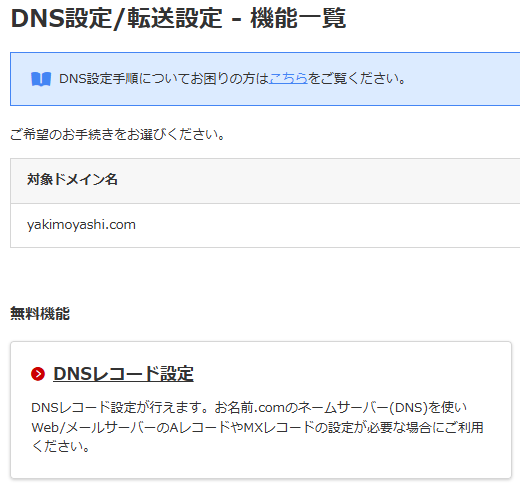
DNSレコード設定をクリック
レコード追加をクリック
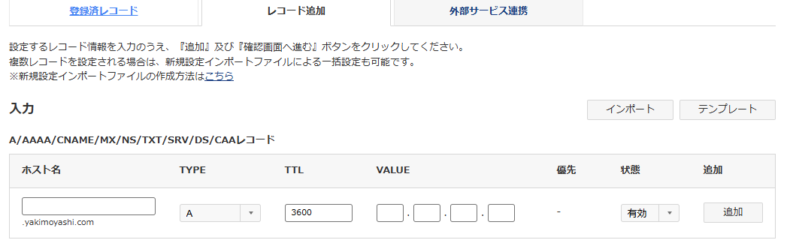
ここで、以下を追加してください。
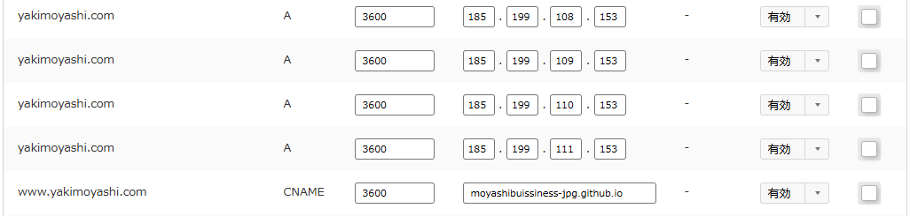
ドメインをGithubPagesに向ける設定です。
上４行の数字はすべてこれと同じものを入れてください
5行目だけ、ホスト名がwww、TYPEがCNAMEなのと、VALUEが自分のGithubPagesのID+.github.ioになるようにしてください
自分の場合はmoyashibuissiness-jpg(ID) + .github.io
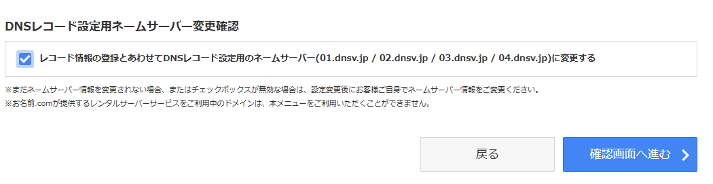
そして、確認画面へ進むボタンを押します。
ここでもう一度注意！
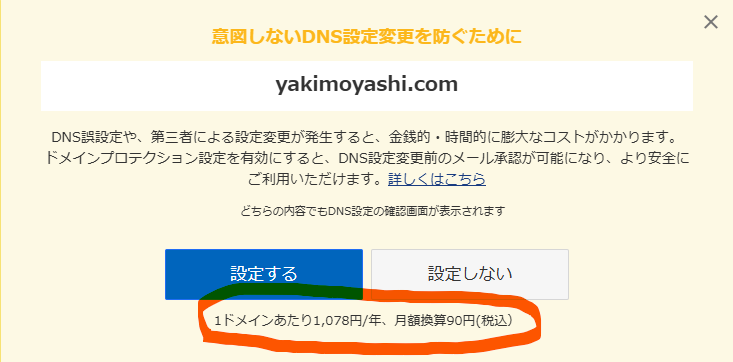
また同じ手口です！
注意してみていないと、気づかない間にいらないサービスに契約させられてしまいます(ｱﾌﾞﾅｲ)
ここは設定しないを選んでください
次の画面で、設定するを押して進んでください。
これで、お名前ドットコムの設定は終了です。
DNS設定はすぐには反映されません、24時間ほどかかることもあるそうです。
GithubPagesのCustomDomain設定
次はGithubpagesのほうでドメインを検索するとindex.htmlが開くように設定していきます。
この流れで進んでください
GithubPagesのサイドメニュー→All repositories→My repository → 作成したレポジトリ
上のメニューバーのSetting→横のPages
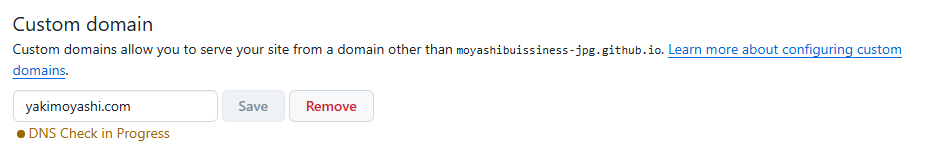
Custom domainに、自分のドメインを入力します。
Saveを押せば、すべての作業終了です。
お名前ドットコム側のDNSレコード設定が終わると、
GithubPagesが自動で紐づけてくれるので、それまで待ちます。
どちらの設定も終わっていれば、ドメインを検索するとindex.htmlが表示されます。